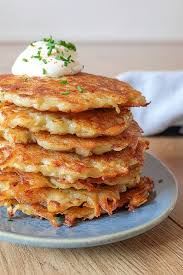

German Potato Pancakes

What are German Potato Pancakes?
German Potato Pancakes, also traditionally called Kartoffelpuffer is a crispy but delish meal that can either be the main show
or a great dish to have on the side. These tasty delights can vary in taste depending on what is desired such as sweet or savory. German potato pancakes (kartoffelpuffer)
is an extremly popular street food that shines even more during germany's holiday festivites. German potato pancakes consist of finley grated potatoes that involve a mixture of flour, onion, and eggs
making the dish contain a soft inside with a crunchy exterior.
breakfast at times can feel mundane, however, taking a loved food item and combining it into something delightful can be the best way to add some
fun and excitment back into morning. As mentioned previously, German potato pancakes can vary depending on the desired taste, this recipe provides the base, allowing
you to add your desired toppings to make it sway to your flavor pallet more.
Ingredients
- 2 1/2 pounds of finely grated and peeled, raw potatoes
- 1 small yellow onion, finely grated
- 2 large eggs
- 1/4 cup all purpose flour
- 1 teaspoon sea salt
- desired oil for frying
Steps: Create the German Potato Pancakes
- Wring out any liquid from the grated potatoes (this can be performed by using your hands and a colander or using
a clean dish towel and wringing out the liquid
- Place the potatoes in a medium-sized bowl with the grated onions, eggs, flour, and salt
- Use your hands to combine the ingredients in the bowl together until it is a tacky mixture
- Use mixture immediately
Steps: Time to Fry
- Heat a few tablespoons of oil in a non-stick pan over medium heat
- Place 1/3 to 1/2 cup of the mixture into the pan and flatten it into pancakes
- Fry on both sides for approx. 3-5 minutes, or until golden
- Place on paper towels to absorb the oil
Steps: Plate the Dish
- Serve on a plate immediately after cooking
- Top with your garnish of choice, such as applesauce, powdered sugar, or something else
Home